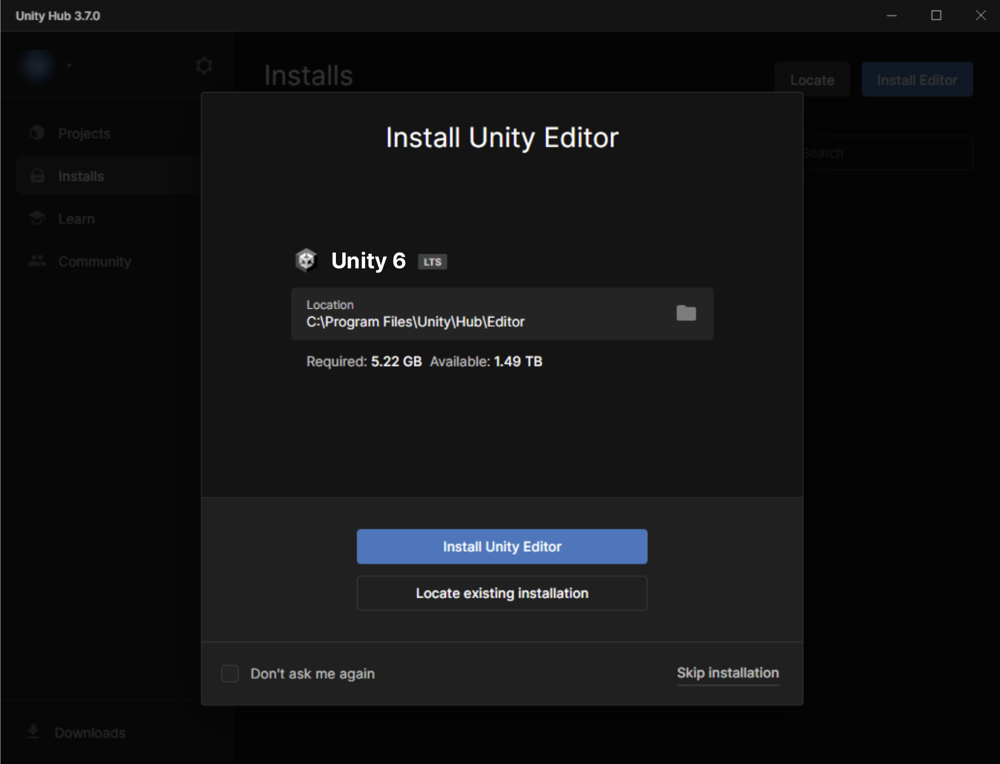
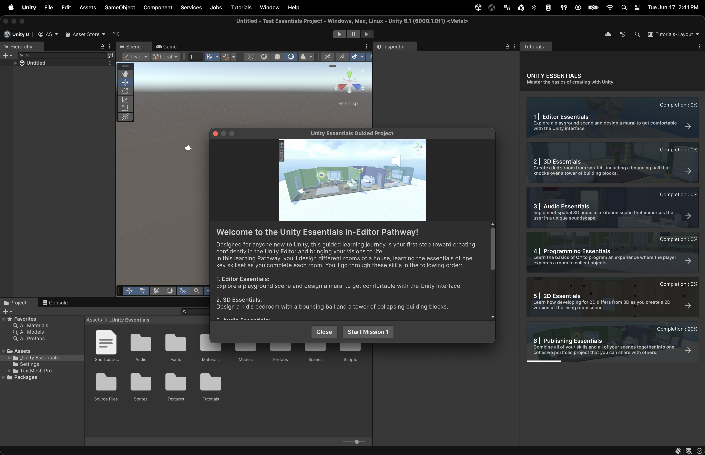
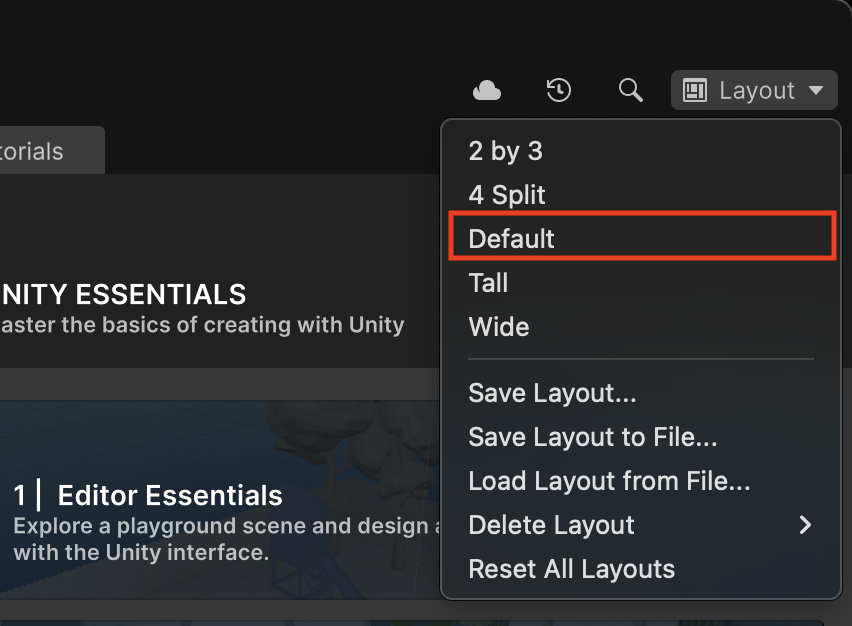
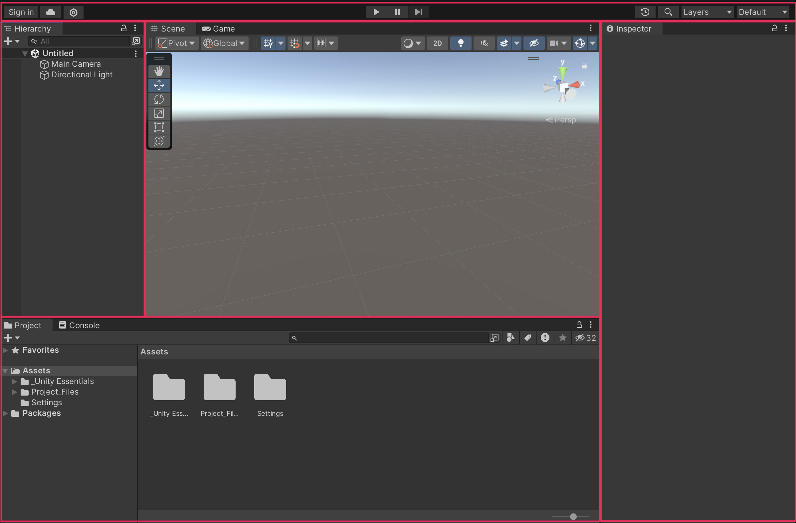
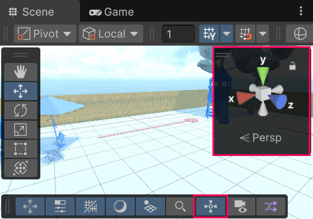
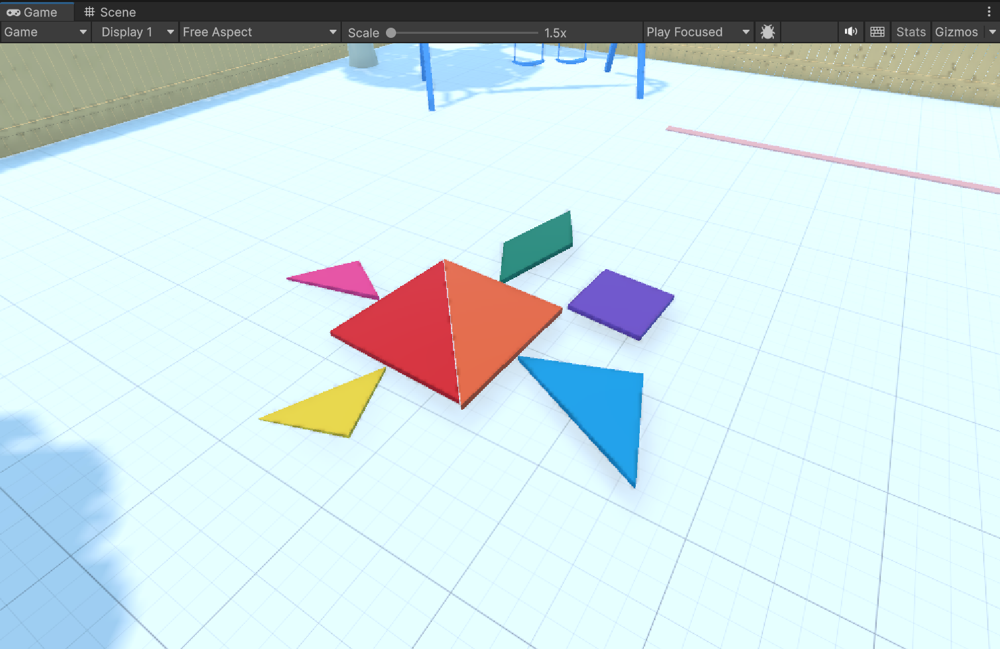

Build a reliable model of the Unity Editor.
After completing this reference, you should be able to locate the primary Editor windows, identify their data scope, modify Transform values, navigate Scene view, test in Play mode, and save a scene. Memorizing every control is not required.
- Differentiate Unity Hub from Unity Editor.
- Open the required project and scene.
- Locate assets, GameObjects, and components.
- Run and stop Play mode safely.
- Frame, fly, orbit, pan, and zoom in Scene view.
- Translate and rotate mural pieces.
Install Unity and identify its two applications
Unity uses two desktop applications with separate responsibilities. Instructions that say “open Unity” may refer to either application.
Installation and project manager. It installs Editor versions, manages licenses, and creates or opens projects.
Authoring application. It edits scenes and GameObjects, runs Play mode, and builds executables.
Unity Personal is the normal free starting plan for individuals. Eligible students can also enroll in the Unity Student plan for education-focused benefits. Plan terms can change, so use Unity’s current page as the source of truth.
- Download and install Unity Hub, then sign in with your Unity account.
- In the Hub, open Installs and choose Install Editor.
- Select the Unity 6 version used in class. If asked, choose the module for a compatible code editor.
- Wait for the installation to finish. The Editor is large, so this can take time.

Open the complete Unity Learn installation guide ↗
Open the Unity Essentials project
The course uses Unity’s Essentials Pathway template. It already contains the robot, playground, scenes, shortcuts, and mural pieces used in this lecture.
- Open Unity Hub and select New project.
- At the top, choose Unity 6.0 or newer.
- Select the Essentials Pathway template.
- Name the project, choose a safe location, and select Create project.

If you follow this article or the Unity Learn website, switch the top-right Layout menu to Default. You can restore Unity’s tutorial panel later through Tutorials → Show Tutorials.

Full reference: Open the Unity Essentials project ↗
Understand the Editor window model
The Default layout displays multiple windows simultaneously. Each window exposes a different scope of project data or a different view of the active scene.

| Area | Data scope | Primary function |
|---|---|---|
| Project | Files and reusable assets stored in the project | Access reusable source assets. |
| Hierarchy | GameObjects instantiated in the active scene | Access the current scene graph. |
| Scene | Editable spatial view of the scene | Position and inspect GameObjects. |
| Game | Output from the active Camera | Preview camera output during Play mode. |
| Inspector | Components and serialized values on the selection | Inspect and modify object data. |
Hierarchy means parent and child
GameObjects can be organized as a tree. A parent contains child GameObjects. Expand the triangle beside Boxes in the Hierarchy to see this structure.
Double-clicking any GameObject in the Hierarchy frames it in the Scene view. If you get lost, double-click Ground to return to a wide view of the environment.
Modify GameObjects and verify behavior in Play mode
Manipulate scene contents from an editor-controlled camera.
Display the output of the active Camera during Play mode.
Select the Play button at the top center of the Editor. Unity enters Play mode and shows the Game view. In the starter scene, use the arrow keys or WASD to move, Space to jump, the mouse to look, and Shift to run.
Inspect components and Transform data
Select a GameObject in the Scene or Hierarchy. Its components appear in the Inspector. Components provide properties and behavior: the Transform stores position, rotation, and scale; other components can make the object visible, interactive, physical, or scripted.
- Exit Play mode and select the Star GameObject.
- Find Position at the top of the Inspector.
- Reduce X by 1–2 units and Y by 1–2 units.
- Enter Play mode and try to collect the star. Stop when finished.
Persist changes by saving the scene
Unity does not automatically save your scene. An asterisk beside the scene name means there are unsaved changes. Press Ctrl/Cmd + S; the asterisk should disappear.
Targeted video references
Use a video when a specific control cannot be located from the written procedure.
Full reference: Explore the Editor Interface ↗
Complete the playground scavenger hunt
Four numbers are hidden in the playground. Each location forces you to use a different navigation skill. Write each digit in order, then test the combined code in Play mode. This page intentionally does not reveal the answer.
Perspective vs Isometric
The Scene gizmo is the cube and colored cones in the upper-right of the Scene view. Click a cone to align to a side or top view. Right-click the gizmo and disable Perspective to enter Isometric mode. Isometric view removes perspective distortion, which can reveal shapes hidden by depth.

Full reference: Master 3D scene navigation ↗
Design a mural in Scene view
The mural exercise applies Move, Rotate, coordinate-space, and projection controls to tangram pieces. Use the supplied reference or define another valid arrangement.

Global and Local coordinates
The axes stay fixed like north, south, east, and west. This is useful when every piece should move in the same world directions.
The axes rotate with the object—its own forward, up, and side. This is useful when movement should follow the object’s orientation.
- Select the Mural GameObject, enable it in the Inspector, and double-click it to frame the pieces and reference.
- Use the Scene gizmo for a top view. Choose Global coordinates.
- Press W for Move. Start with a large triangle and position it using the red X and blue Z arrows.
- Press E for Rotate. Drag the green Y ring with a straight mouse motion until the piece fits.
- In Isometric view, drag the small square between the X and Z arrows to slide a piece across both axes at once.
- Complete the design, disable Tangram_Reference, restore Perspective, orbit to inspect the result, and save.
Full reference: Design a mural in the Scene view ↗
Completion criteria
The lecture is complete when you can perform each operation without step-by-step prompting.